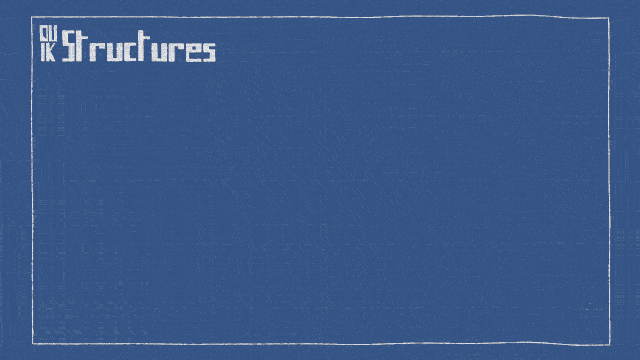
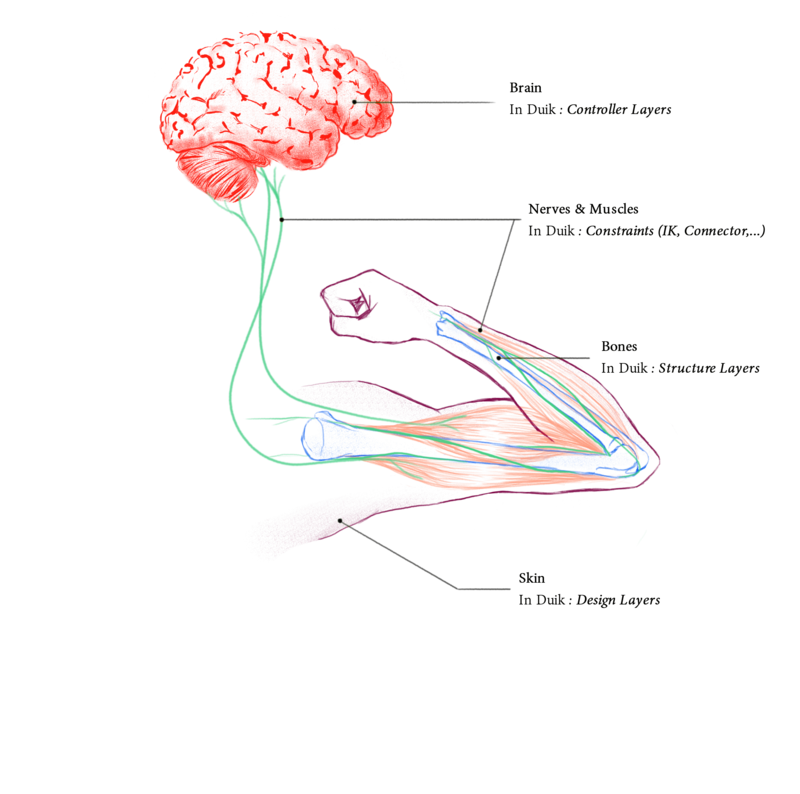

The rigging process in Duik Bassel
To make the rigging process easier and more versatile in After Effects, Duik Bassel introduces the Structures which are very similar to bones or joints in 3D software.
The process can be summarized in just a few words:
- Structures
a. Create Structures
b. Link layers - Controls
a. Auto-rig
b. Constraints - Extract controllers
a. Add the rigged composition to your scene(s)
b. Extract the controllers to animate - Animation

To get started quickly with this process, just watch this jumpstart by Jake In Motion:
Structures
Structures are layers you can add in your composition which will drive the animations, like the rig of a real puppet. The process is very simple: create or import your design in After Effects, add Structures and move them to the right spots (the pivots of each limb). Then you can rig those Structures, instead of the design itself like in previous versions of Duik, and finally link the design layers to the corresponding Structure layers.
This way, the rig you create is independant from the design. This means it’s easier to adjust the design even after the rig has been made, or even to re-use the same rig with other designs. Also, this rigging process is easier to fix or change if ever you need to adjust it even when you’re already in the process of animation.

 Controllers
Controllers
Using the autorig, and a set of constraints, what you end with are Controllers to drive the animation. You animate the controllers, they drive the structures through the constraints, and voilà! Your character moves.
 Constraints
Constraints
The interaction between the Controllers and the Structures, and between the Structures themselves, happens through some Constraints. Some of them are the core tools of Duik since the first version, like IK which drive the bending of limbs, and the Bones which are used to control any spatial properties: puppet pins, the emitter of a particle effect, and, with CC2018 and newer versions of After Effects, any Bézier value, like shapes or masks.
There is also a whole new set of constraints to automate even more movements and make the animator’s life very easier: it’s now possible to animate parenting with the new Parent Constraint, or to constrain a layer to a Bézier path, to attach a layer to other layers using weights, etc.
 Auto-rig
Auto-rig
Let’s face it, most of the time you only need to rig standard animals, with legs, arms, spine, maybe a tail… All what differs are the hair, some props and cloth.
The Auto-rig is a versatile tool to automate most of this process. It is able to recognize predefined Structures created by Duik and rig them automatically. It handles all kinds of limbs and animals, even imaginary ones.
All you have to do is to create the Structures, the Auto-rig will do the rest, adding constraints and controllers for a fully rigged character. All that will be remaining are specific cases (hair, props), and facial rigging which is not automated yet.
Automations
As soon as your character is rigged, you can begin the animation, being helped by a lot of Automations.
Automations are procedural animations and dynamics to quickly set the most common animations up and then focus on the characterization of your character. You can automate wiggles, springs, wheels, etc. with customizable and advanced controls for example to loop the effects, and access each and every detail quickly and easily.